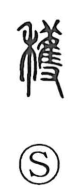

穫

Uncategorized
Kun: karitoru, kariire | On: kaku
reap ・ harvest ・ gather in
Explanation
A phono-semantic character: its base graph shows a bird being seized by two hands—an image of catching—that serves as the phonetic element and gives the on reading kaku. When the rice-plant sign 禾 is combined with this “seize-a-bird” base, the sense shifts to cutting and gathering grain, hence reap and harvest. A parallel formation replaces 禾 with the dog 犬 to make 獲, the act of taking game in the hunt. Within this family of graphs, 穫 is the later character, specialized for the harvest.